Zusammengefasster Reiseverlauf Florida 2015
Miami & Miami Beach (23.-28. Mai)
Miami Beach
- Hotel: Setai Hotel
- Ausstattung: Luxuriöse Suite mit Straßenblick, hochwertiges Buffet-Frühstück mit internationaler Auswahl, hoteleigenes Grill-Restaurant, Bar mit exklusiven Getränken
- Lage: Zentrale Lage in Miami Beach
- Impression: Lebendiges, urbanes Ambiente
- Strand: Sehr breiter Sandstrand mit türkisfarbenem Wasser, viel Platz für Sonnenbaden und Wassersport
Unternehmungen
- Stadtbesichtigung: Hop-On/Hop-Off Tour durch Miami Downtown
- Besichtigung: Coconut Grove, Coral Gables und Little Havana
- Bootstour: Durch den Hafen
- Ocean Drive: Erkundung der berühmten Promenade mit vielfältigen Restaurants und Bars, lebendiges Nachtleben
- Shopping: Aventura Mall, große Einkaufsmeile mit internationalen Marken, hohes Preisniveau
Verkehr
- Mietwagen: Lincoln Navigator (ursprünglich gebucht: Chevy Tahoe)
- Besonderheit: Feueralarm am Flughafen verzögerte Abholung des Fahrzeugs
Key West (28.-31. Mai)
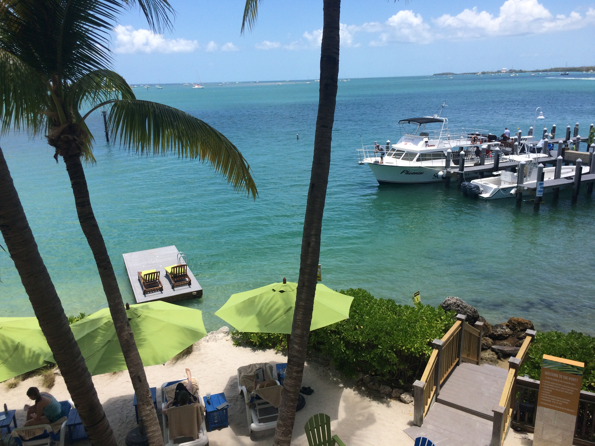
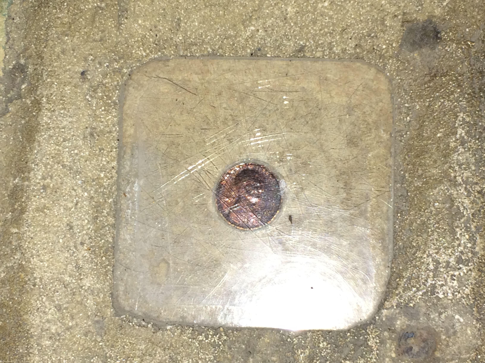
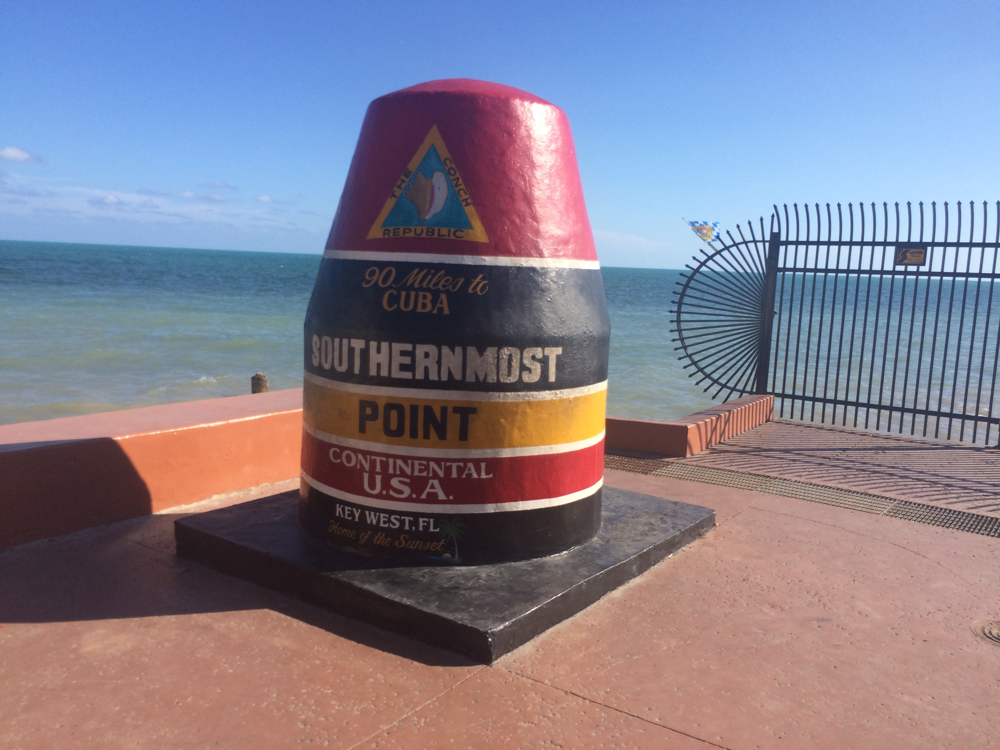
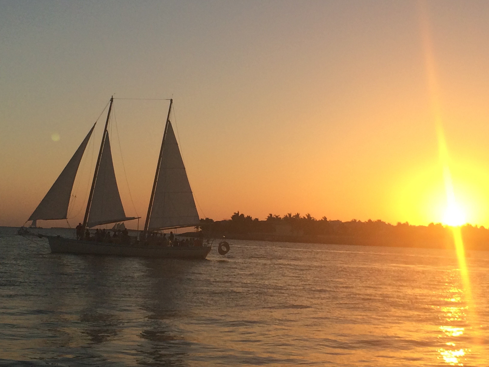
Unterkunft
- Hotel: Hyatt Key West
- Zimmer: Mit Golfblick
- Lage: Zentrale Lage in Key West
- Impression: Charmantes Ambiente, typisches Insel-Flair
Sehenswürdigkeiten
- Truman Little White House: Historisches Wohnhaus des ehemaligen US-Präsidenten
- Key West Leuchtturm: Mit 88 Stufen, guter Blick über die Stadt
- Hemingway House: Wohnhaus des berühmten Schriftstellers
- Southernmost Point: Südlichster Punkt der kontinentalen USA
- Mallory Square: Bekannt für Sonnenuntergänge
Aktivitäten
- Jetski-Tour: Rundtour um Key West, Atlantik und Golf von Mexiko treffen sich an dieser Stelle, schnelles Fahren durch die Küstengewässer
- Schnorcheln: Möglichkeit zur Erkundung des maritimen Lebensraums
- Duval Street: Hauptstraße mit vielen Restaurants, Bars und Geschäften
- Caroline's Café: Lokale Spezialitäten
- Sloppy Joes Bar: Historische Institution
- Sonnenuntergänge: Beobachtung der Sonnenuntergänge am Pier
Lokale Küche
- 2 Friends Restaurant: Frische Meeresfrüchte und Pasta
- Key Lime Pie: Typisches Dessert der Region
- Cajun-Gerichte: Lokale Spezialitäten zum Frühstück
Everglades & Naples (31. Mai - 2. Juni)
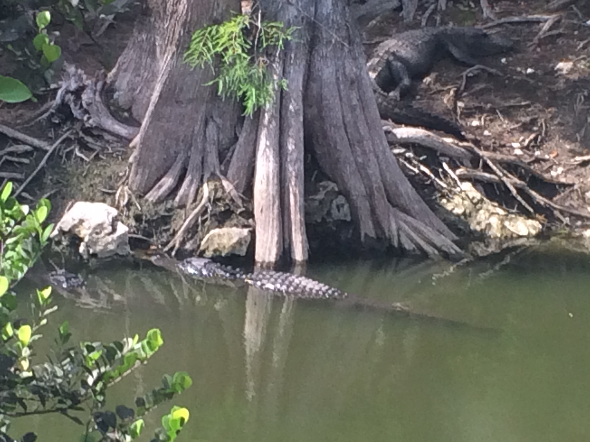
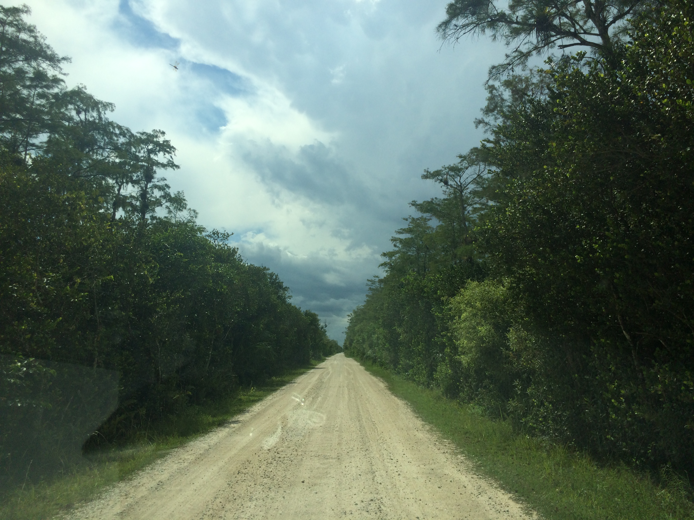
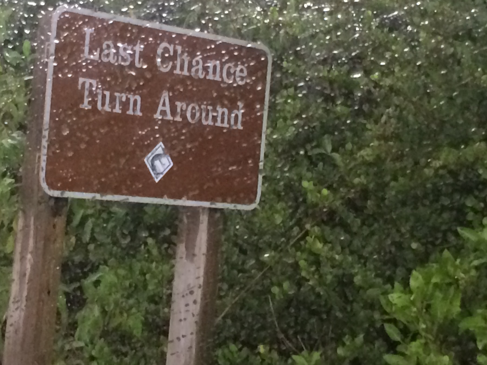
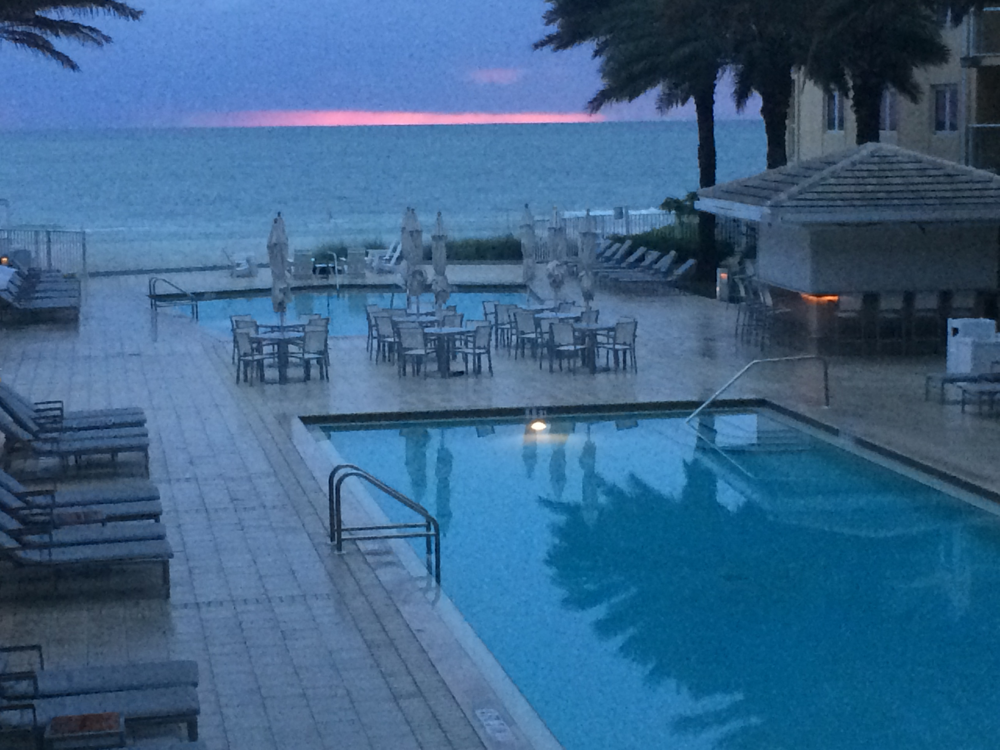
Everglades National Park
- Anreise: Fahrt durch die Florida Keys
- Besonderheiten: Über 20 Meilen Schotterstraße
- Wildbeobachtung: Alligatoren in freier Wildbahn, Schildkröten und diverse Vogelarten
- Aktivitäten: Airboat-Touren durch die Mangroven, Fütterung von Alligatoren mit Marshmallows, Beobachtung von Krebsen und anderen Wasserbewohnern
Naples
- Hotel: Edgewater Beach Resort
- Ausstattung: Suiten mit Golfblick, privater Golfstrand
- Strand: Breiter Sandstrand am Golf von Mexiko
- Wildbeobachtung: Delfine und Pelikane im Küstenbereich
Fort Myers
- Edison & Ford Winter Estates: Historische Villen der Erfinder, interessantes Labor und Ausstellungen, großer botanischer Garten
- Hotelrestaurant: Rinder-Steaks und Meeresfrüchte
Orlando (4.-7. Juni)
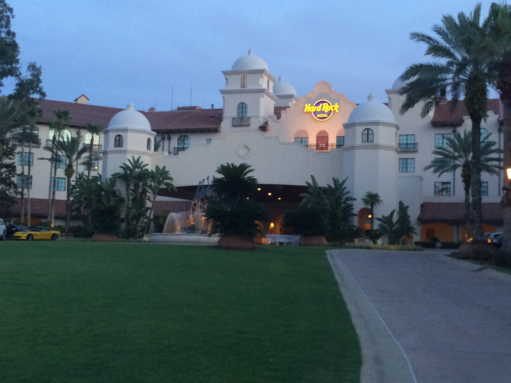
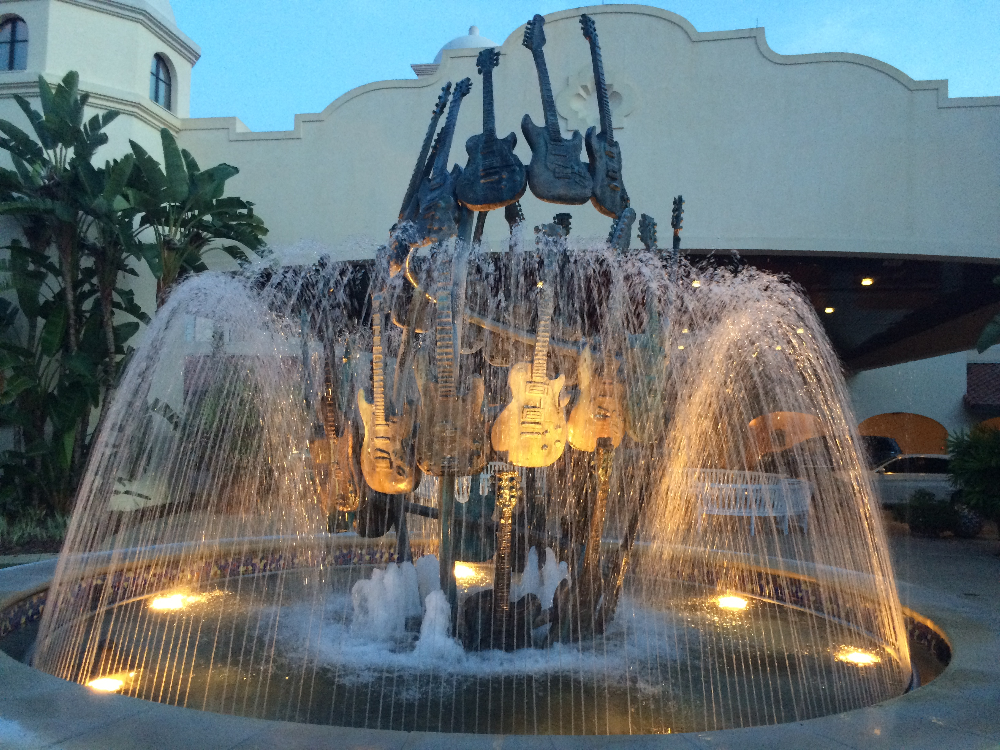
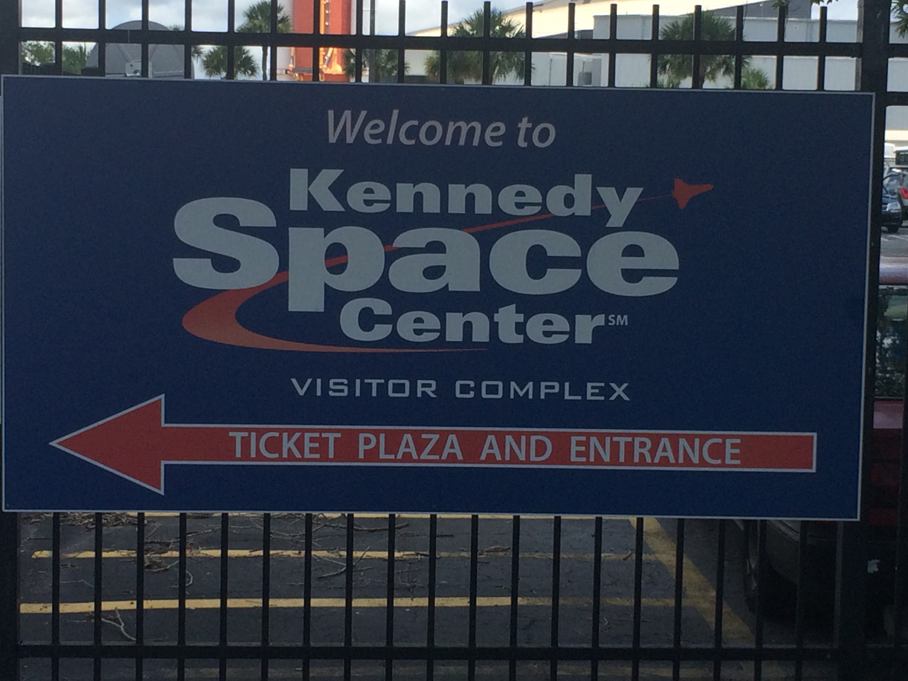
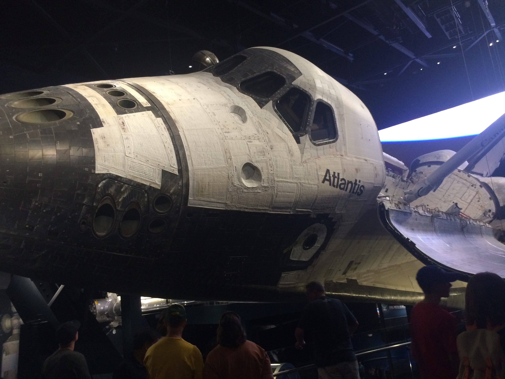
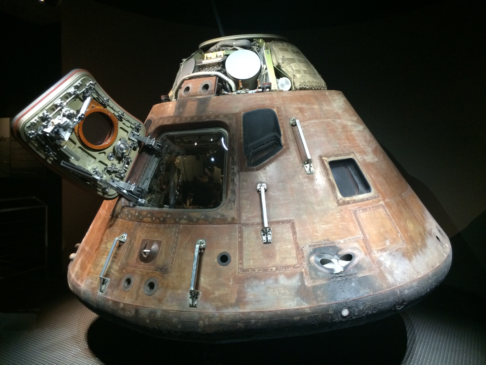
Unterkunft
- Hotel: Hard Rock Hotel Orlando
- Ausstattung: Großes Resort am Universal Studios Resort, familienfreundliche Atmosphäre, viele Kinder und Familien als Gäste
Kennedy Space Center
- Besichtigungen: Saturn V Rakete in Originalgröße, Space Shuttle Atlantis in Original, IMAX-Kino mit 3D-Darstellungen, Bustour zu den Startrampen, Ausstellungen zur Mars-Mission
- Eintritt: 419 Dollar für Zutritt zu allen Attraktionen
Universal Studios Florida
- Hauptattraktionen: Harry Potter Bereich mit Hogwarts Express, Jurassic Park River Adventure (nasse Fahrt), The Incredible Hulk Roller Coaster, Men in Black Alien Attack, The Simpsons Ride, Transformers 3D, ET Adventure
- Besonderheiten: Water Taxi zum Park-Eingang, mehrere 3D-Rides mit modernster Technik, verschiedene Shows und Vorführungen
- Essen: Restaurants mit internationaler Küche, Fast-Food-Optionen, Themenrestaurants
Orlando Shopping
- Outlet Shopping: Große Outlets mit internationalen Marken, Kleidung, Accessoires und Souvenirs, preisgünstigere Optionen im Vergleich zu normalen Geschäften
Allgemeine Eindrücke
Verkehrsinfrastruktur
- Mautsystem: Autobahnen in Florida sind mautpflichtig
- Tankstellen: Selbstbedienung mit Kreditkarte
- Navi-Probleme: Hardrock-Hotel Orlando wurde vom Navigationssystem nicht korrekt erkannt
Kulinarische Highlights
- Steakhäuser: Tomahawk-Steaks und hochwertiges Rindfleisch
- Meeresfrüchte: Frische Fische und Meeresfrüchte an der Küste
- Key Lime Pie: Typisches Dessert der Region
- Fast Food: Burger und andere amerikanische Fast-Food-Ketten
Unterkünfte
- Luxussegment: Setai Miami Beach im obersten Preissegment
- Mittelklasse: Hyatt Key West und Edgewater Beach Resort
- Familienfreundlich: Hard Rock Hotel Orlando
Aktivitäten
- Strandaktivitäten: Schwimmen, Sonnenbaden, Wassersport
- Stadtbesichtigungen: Historische Stätten und moderne Attraktionen
- Naturerlebnisse: Everglades, Wildbeobachtung, Nationalparks
- Themenparks: Universal Studios, Kennedy Space Center
Besonderheiten der Reise
- Reisedauer: 16 Tage im Mai/Juni 2015
- Route: Von Miami nach Key West, dann nach Norden über Naples und Fort Myers nach Orlando
- Transport: Mietauto für die gesamte Reise
- Sprache: Englisch, teilweise mit spanischen Einflüssen in Miami
- Währung: US-Dollar
- Klima: Warmes Klima mit hoher Luftfeuchtigkeit, gelegentliche Regenschauer
Tipps für Reisende
- Mietwagen: Buchung im Voraus empfehlenswert, besonders während der Hauptsaison
- Unterkünfte: Reservierungen für beliebte Hotels frühzeitig vornehmen
- Aktivitäten: Eintrittskarten für Attraktionen online kaufen, um Wartezeiten zu vermeiden
- Essen: Lokale Restaurants oft besser als Kettenrestaurants
- Naturschutzgebiete: Besondere Kleidung und Schutzmittel gegen Insekten notwendig